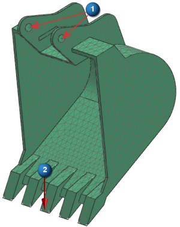

问题
1
2
在下面的例子中，假设您正在高级仿真中将这个挖掘机的铲斗定义为柔性体。在运动机构中铲斗顶部的两个孔(图中的1)间定义一个旋转副，一个力载荷被应用到其中一个齿(2)上。
在高级仿真中，您在求解 SOL 103 柔性体解算方案前必须应用哪个约束？

选择一个
在求解 SOL 103 柔性体解算方案之后，当您在运动仿真中创建柔性连杆时， 必须将什么文件与连杆关联，以显示机构中柔性体的动力学表现？
选择一个
错误！
正确！
在各个柔性体通过运动仿真中的运动副或衬套连接到机构的连接节点处，创建固定边界自由度约束来定义连接自由度。在运动仿真中应用到柔性体上的力、力矩、弹簧或者阻尼器的各个连接节点处，创建一个自由边界自由度约束以定义载荷自由度。
当在高级仿真中求解 SOL 103 柔性体模态解算方案时，求解器将柔性体的质量和刚度减少到模态空间，以表示它的动力学行为，这些减少的矩阵保存在 RecurDyn Rflex 输出文件(.rfi)中。在运动仿真中，将.rfi 文件与连杆关联以创建柔性连杆。